Porting IQ 2D SDF Shadertoys to Unreal - Part 2
As a quick refresher, we're working on reproducing the 2D signed distance field described on Inigo Quilez's blog, we've got our circle, and now we're gonna inject some colors in there !
The Target
The goal this time is to reproduce the overall look of IQ's shadertoy's that demos the 2D SDF functions.
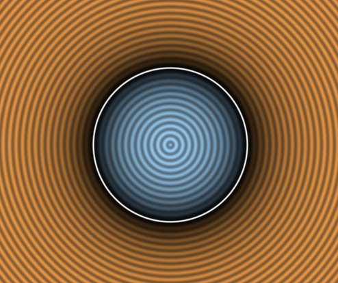
You can go check the shadertoy here but we're gonna go over the important lines.
Here's the commented code we're going to port, I've removed the mouse related stuff as it's out of scope :
1 2 3 4 5 6 7 8 9 10 11 12 13 14 | |
As you might see there's 3 big parts to the shader:
- Computing p: transforming from the quad [0, 1] coordinates to the circle local coordinates
- Evaluating d: in our case we're just evaluating the circle SDF function
- Determining col: this is the color computation we're interested about today
Following the previous part you should already have p and d computed, so now we only have to port the color code, it's split into 4 parts that renders that particular look :
[1] Picking a color depending if we're inside or outside the shape
[2] Darken that color if we're near the outline
[3] Generate the wavy pattern centered on the SDF
[4] Add a thin white outline where the SDF goes from positive to negative
Let's tackle those one by one.
Picking a color
The color pick code is very simple, if d is positive we're outside and pick one color, if it's negative we're inside and pick the other color.
vec3 col = (d>0.0) ? vec3(0.9,0.6,0.3) : vec3(0.65,0.85,1.0); // inside and outside colors
So we need 4 nodes here :
- 2 colors or vec3
- A way to compare the distance field with a number
- A way to pick between our 2 colors depending on our condition
Color nodes
The 2 colors are straightforward, we can do as before by using a Constant3Vector but I think it would be nice if we could edit this value from outside the shader, so let's go with a VectorParameter !
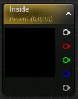
When you create the node you get to give it a name, the name here is important if you want to drive the color from code or blueprint later. We're going to name it Inside for the inside color. And while we're at it we'll create a 2nd node named Outside. Let's copy the shader's value in the node and tada ! Our colors are ready.
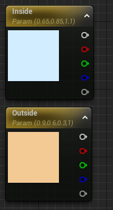
Comparison and Branch
Actually I lied, going into this I thought we would need 2 nodes for the condition and the comparison, kind of like in a normal blueprint. But turns out in a material the If node actually does both of them at the same time. It takes 2 single float values, and outputs something depending on the 3 other pins.
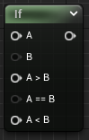
Although the A pin needs to be provided, if you look at the If node details panel you'll find that you can set the B pin constant there directly, and it's 0 by default which is just what we want, lucky !
Slight Stop at the Reroute
Before wiring things up, I learned about "Named Reroute Nodes" which I believe is a great way to give name to our intermediate results and denoodelify our graph ! We're going to create one to note our signed distance field result, the variable d in the original shadertoy.
To create one, drag from the Substract output to an empty space and create a reroute node.
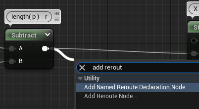
This will prompt you to give it a name (if you mess up you can quickly rename by selecting the node and pressing F2), let's name it d just like the shadertoy. Then we can rewire it back and see that nothing changed ! (Well aside from a better annotated shader)
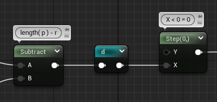
The nice thing is that afterward we can just pull the reroute node alone in a separate part of the graph without having to pull wires around. See in the right click menu.
Plug everything together
Alright let's make some noodles, starting from our previous graph we want to take the distance field value d, plug that into the A pin of our If node, plug the Outside color to A > B (which is d > 0, outside the circle) and plug the Inside color to A < B (which is d < 0, inside the circle).
Finally you can move or delete the Step node and plug the If output to the Final Color pin and enjoy the result !
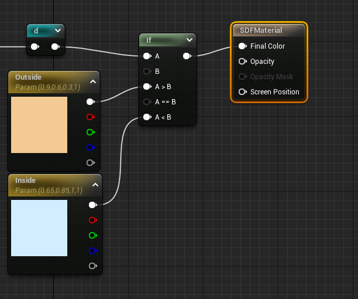
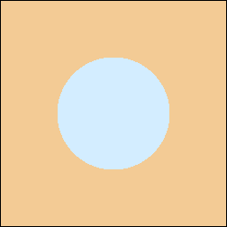
You might notice that the colors are washed out even though we have the same RGB, we'll go over that in an other article because there's some interesting technical details between shadertoy and unreal UI materials there
Create the Shadow
Next step is to create the dark shadow around the outline, it's done by evaluating an exponential function that results in a very low value when the input is 0 and a value near 1 when the input is 1 with a strong falloff
col *= 1.0 - exp(-6.0*abs(d));
We can plug this in desmos and see what it looks like :
As I said, 0 at 0, 1 at 1, with strong falloff closer to 0.
Since we've already seen the basic math node we're only going to check how to make the Abs and the Exp.
Absolute
This one is straightforward, there's a built-in Abs node.
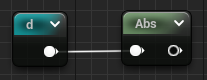
We can add a Multiply * -6 node and wire it and we're ready for the exponential.
Exponential
Fairly easy too as it's a built-in function in GLSL and HLSL, we can just search for the exp node aaand...
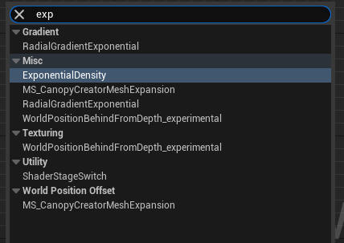
No exp ? So actually there's no exponential function node in Unreal, which I don't really understand why. Luckily, the exponential function is just putting a particular constant (e) to the power of the value you want (in our case the result of -6*abs(d)).
To get e's value, we can make a constant node and do a quick google search which will give you a nice value to sufficient precision and learn a few things about that famous Euler's number ! Or you can just copy this 2.718281828459.
So our easy exponential node became a Power node in the end, but we got what we wanted !
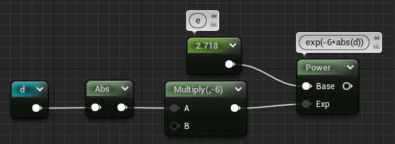
At that point we can open the node by clicking on the lil' arrow on the top right to see if we made any mistakes :
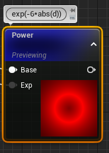
It's red here because we're outputting only one channel. We've got a strong white at the outline and a quick falloff to 0 when we get out. We can already see that the scale is a bit wrong. This is because the -6 that IQ picked was dependent on the shadertoy viewport scaling he used (see his p computation), we can adjust it for our setup by switching the -6 to a -16 for example (lower values gives stronger falloff, test on the desmos link !).
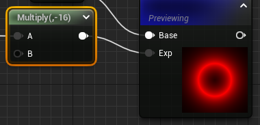
We'll see other values to adjust later, I'll call them out when we get there.
The value goes from 1 at the outline to 0 outside but we want the other way around, that's what the 1 - X is for ! One subtract and a multiply later we already have a lot more bumpiness to our circle
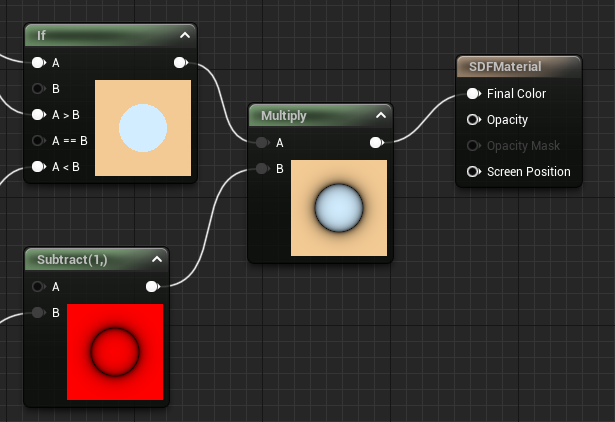
Generate the Wavy Pattern
col *= 0.8 + 0.2*cos(150.0*d);
The goal of this equation is to remap the gradient emanating from the center of the circle to an oscillating value. To achieve this we can use the cosine function which outputs a value between -1 and 1, multiply that by .2 to get a value between -.2 and .2. And finally add .8 😀
Those numbers control the amplitude and min/max values of the wave (center=.8, which gives us min=(.8-.2) and max=(.8+.2) !)
The 150 controls the frequency, or how close each wave peaks are. With our scale we should reduce that a bunch, 60 seems to be a good value. This time I noticed that you can just input the constants in the math node directly, so that gives a pretty compact graph !
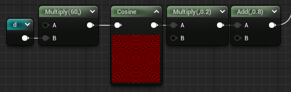
We multiply our previous color by the wave and we're almost there 😁
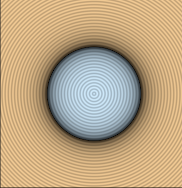
Strongify the Outline
Ok last part of the color equation, the small outline.
col = mix( col, vec3(1.0), 1.0-smoothstep(0.0,0.01,abs(d)) );
This one is a bit more esoteric, we can see 2 built-in GLSL functions mix and smoothstep. We'll go from the inside to the outside starting with the smoothstep.
Smoothstep
1.0 - smoothstep(0.0, 0.01, abs( d ) );
We've seen the Step function in Part 1, Smoothstep is equivalent but generates a gradient instead of a hard line.
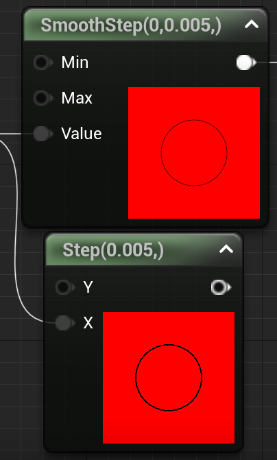
If you're curious about the math behind the smoothstep it's usually a polynomial of degree 3 like this one :
Mix
mix( col, vec3(1.0), smoothstep );
Mix is a simple linear interpolation between 2 colors by a value in the [0, 1] range. The equivalent node in Unreal is LinearInterpolate
So as stated in the expression we're going to interpolate between the color and a white vector, using the smoothstep result as the interpolation value. And all that in a single node !
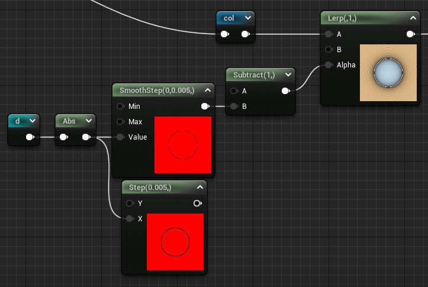
Wiring everything together
Once we got all the pieces, we can mix them up using multiply and lerp and we get the final graph. I've used some Named Reroute nodes to organize the various data we're computing and the result is not too bad !
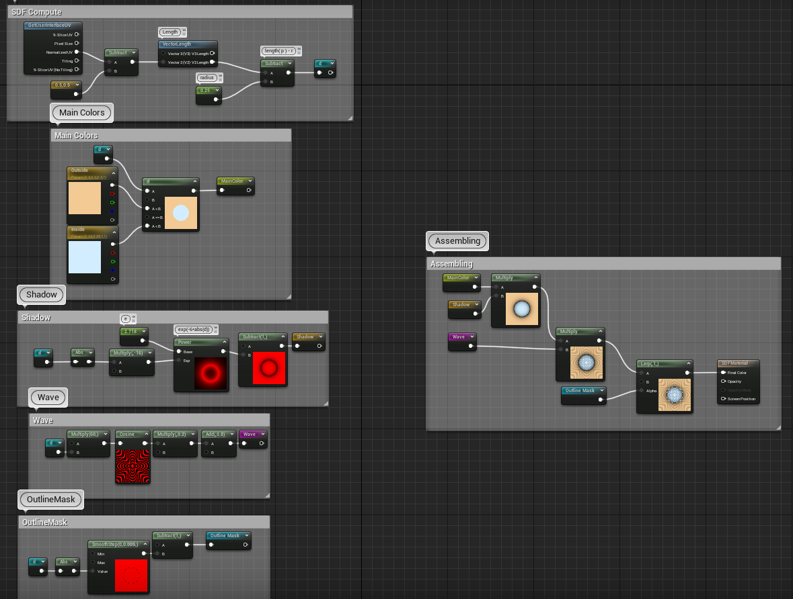
Wrapping up
Alright this article has been long enough !
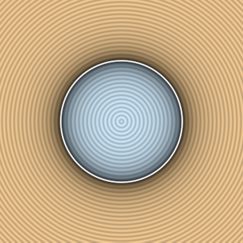
Compared to the expected result I'm not completely satisfied with what we have. The colors are washed out, the spacings are not exactly the same, changing the quad size results in weird stretching, we'll fix all that in the next article and from there we'll finally grind those SDF functions properly and get more than a circle !